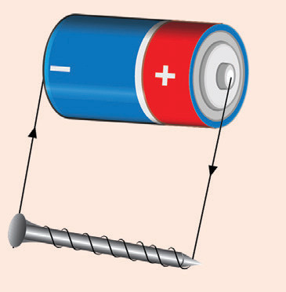
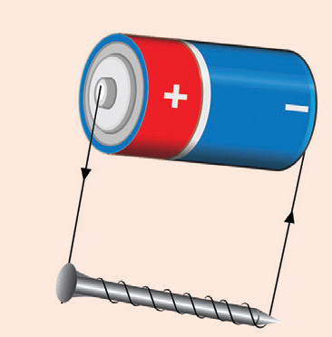

Explain how you can determine which bar is a strong permanent magnet.
(a) The two magnets are arranged with the N-pole of P 1 m from the S-pole of Q as shown in Figure 3.59.
Is there a neutral point between the two magnets?
If there is, how far from magnet P is it located?
If there is no neutral point, explain why.
(b) Magnet Q in Figure 3.59 is flipped so that the two north poles are 1 m apart as shown in Figure 3.60.
Is there a neutral point between the two magnets?
If there is, how far from magnet P is it located?
If there is no neutral point, explain why not.
Is there a neutral point between the two magnets?
If there is, how far is it from magnet P?
If there is no neutral point, explain why.
16. Copy the image of a horseshoe magnet shown in Figure 3.62 and sketch 8 to 10 field lines.
17. Compasses designed to be used in cars are equipped with a suction cup so that they can be mounted on the dashboard. Why?
18. Suppose that in Figure 3.63 (a) the nail becomes magnetised, with the head of the nail becoming a north magnetic pole.
What could happen if the battery was reversed as in Figure 3.63 (b)?

